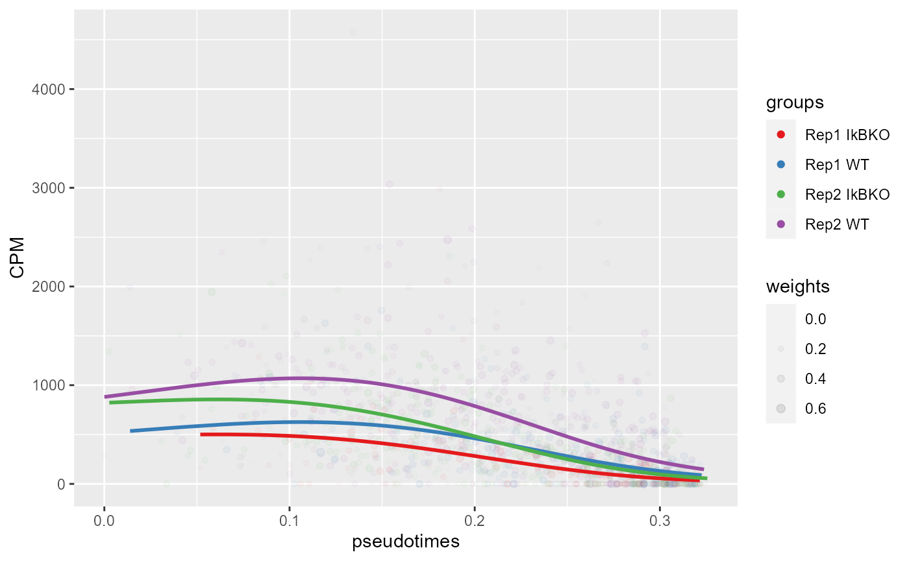

LineageDE-vignette
LineageDE-vignette.RmdExample running Lineage DE
library(LineageDE)Load in Example Data
This example data already contains the pseudotime results needed to run LineageDE. See Pseudotime_Generation_vignette for how this input is generated The function samplePseudotime can be utilized to generate your own pseudotime results using Slingshot (Street et al. BMC Genomics 2018)
data("ExampleInputData")This input Data contains gene expression information (counts) across HSPCs (hematopoietic stem and progenitor cells) from two conditions (WT & IkBKO) and two replicates (Rep1 & Rep2). (Data subsampled from publication Singh et al.)
ori.pseudotime and ori.weights come from the original pseudotime calculation using all data. sub.pseudotime and sub.weights come from the pseudotime calculations on subsets of sampled data.
Note: to take advantage of parallelization on genes and if RhpcBLASctl installed, run the following command to avoid multithreaded operations:
#RhpcBLASctl::blas_set_num_threads(1)Step 1: Choose appropriate value for k
We first restrict to only potentially testing genes with nonzero expression in at least 5% of cells (if mostly zero counts, model fitting will fail as k increases).
genes2test = colnames(ExampleInputData$counts)[(Matrix::colSums(ExampleInputData$counts>0)>=(0.05*nrow(ExampleInputData$counts)))]
#> Loading required package: Matrix
#> Warning: package 'Matrix' was built under R version 4.1.3
length(genes2test)
#> [1] 9810In this example this is performed only for lineage number 1 & sampling only 10 genes to reduce runtime (set parallel = TRUE, n_cores = # to make sampling more genes faster; utilizes BiocParallel)
k_results<-chooseK(ExampleInputData$counts, ExampleInputData$ori.pseudotimes, ExampleInputData$conditions, weights=ExampleInputData$ori.weights, experiments=ExampleInputData$experiments, linCompare=1, n=10, genes=genes2test, save.name = NULL)
#> [1] "Khk"
#> [1] "Lrpap1"
#> [1] "Ppp2r5d"
#> [1] "Cdk8"
#> [1] "Ube2j1"
#> [1] "Rcl1"
#> [1] "Apobec1"
#> [1] "Panx1"
#> [1] "Rad51b"
#> [1] "Plbd2"
#> [1] "choosing K done!"
plot_AIC = k_results$AIC/k_results$AIC[, 1]
plot(colnames(plot_AIC), apply(plot_AIC, 2, mean, na.rm=TRUE), pch=19, ylab="AIC", xlab="k")
lines(colnames(plot_AIC), apply(plot_AIC, 2, mean, na.rm=TRUE))From the above analysis, we choose a value for k from where AIC appears to take a minimum.
Step 2: Run LineageDE
From the prior analysis we choose k = 3. In this example we continue to test lineage 1 & test only 3 genes to reduce runtime (set parallel = TRUE, n_cores = # to make testing more genes faster)
k=3
DE_results<-LineageDE(genes=c("Hlf", "Tbp"), ExampleInputData$counts, ExampleInputData$ori.pseudotimes, ExampleInputData$conditions, ori.weights=ExampleInputData$ori.weights, experiments=ExampleInputData$experiments, linCompare=1, k=k, samples=ExampleInputData$samples, sub.pseudotimes=ExampleInputData$sub.pseudotimes, sub.weights=ExampleInputData$sub.weights, save.name="None")
#> [1] "running LineageDE"
#> [1] "Hlf"
#> [1] "Tbp"
#> [1] "finished gene split 1 of 1"
#> [1] "LineageDE done!"
head(DE_results)
#> gene LRT ori.pVal emp.pVal par.pVal
#> 1 Hlf 145.730205320671 0 0.0099009900990099 0
#> 2 Tbp 5.3684300848538 0.146723190678519 0.297029702970297 0.287755672818664
#> pVal.adj
#> 1 0.0000000
#> 2 0.2877557Step 3: Plotting
Plot Gene Expression and Model Fit along Lineage
plotGene("Hlf", ExampleInputData$counts, ExampleInputData$ori.pseudotimes, ExampleInputData$conditions, weights = ExampleInputData$ori.weights, experiments = ExampleInputData$experiments, linCompare=1, k=3)
Alternative Uses
LineageDE can also be used to compare different lineages within the same experiment Here we want to compare lineages 3 & 4 (can compare any number of lineages) to one another rather than compare between the two experimental conditions
newData = convertInput(ExampleInputData$counts, ExampleInputData$ori.pseudotimes,c(3, 4), ori.weights=ExampleInputData$ori.weights, experiments=ExampleInputData$experiments, samples=ExampleInputData$samples, sub.pseudotimes=ExampleInputData$sub.pseudotimes, sub.weights=ExampleInputData$sub.weights)Now newData can be plugged into chooseK, LineageDE, and plotGene as presented above with linCompare=1
“conditions” will carry information about which lineage is which
Note: NA in newData$ori.pseudotimes corresponds to cells with no assignment to the lineages of interest